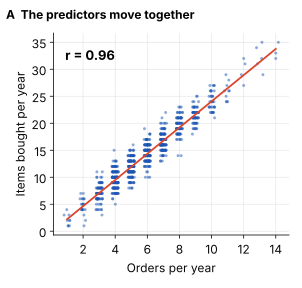
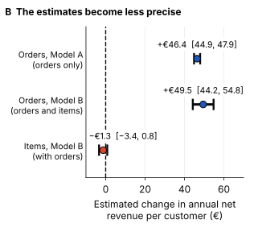
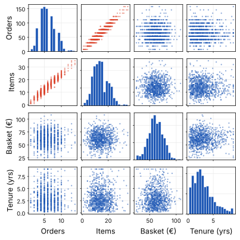
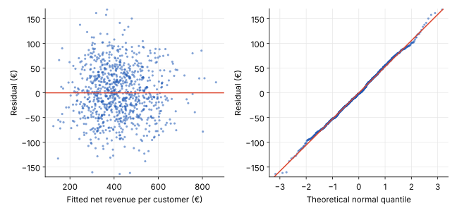

Regression analysis
Multiple Linear Regression
An online retailer looks at two customers. Both placed 6 orders last year, yet one generated €280 in net revenue and the other €520. Simple Linear Regression can model how revenue relates to order frequency, but because both customers placed the same number of orders, it cannot explain their revenue difference using that predictor alone.
Average basket size and acquisition channel may help explain the gap.
Multiple linear regression estimates the relationship between an outcome and several predictors at the same time. This post builds one for net revenue per customer. The numbers come from simulated data for an online retailer, so the patterns are realistic but not from a real company.
From One Predictor to Several
The multiple regression equation
In Simple Linear Regression, revenue is modeled using one predictor. Multiple Linear Regression extends this idea by including several predictors, each with its own coefficient.
For an online retailer, net revenue might depend on order frequency, average basket size, and the channel through which the customer was acquired.
The model
Each coefficient represents a different part of the model:
- b0 — Intercept: The predicted revenue when all numeric predictors are zero and categorical predictors are at their reference categories.
- b1, b2 — Coefficients: Each coefficient estimates the change in predicted revenue associated with a one-unit increase in its predictor, while the other predictors remain constant.
What does “holding other predictors constant” mean?
Suppose the coefficient for Orders is €40. Two otherwise identical customers differ by one order per year. The model predicts €40 more in annual net revenue for the customer who places the additional order, assuming their basket size, acquisition channel, and other predictors remain unchanged.
The coefficients are estimated using Least Squares. The method finds the values that minimize the sum of squared differences between actual and predicted revenue.
The Data and Its Preparation
The outcome is net revenue per customer over the last 12 months, measured in euros (€), after returns and discounts. The model uses three predictors:
- Orders per year (numeric): approximately 6 on average, ranging from 1 to 14.
- Average basket size (numeric): approximately €62 per order.
- Acquisition channel (categorical): Organic, Paid Search, or Referral.
The figures are illustrative and based on simulated data, not a real retailer.
The data contain 1,200 customers. The model is fitted on 900 of them, and the other 300 are held back for the test at the end of this post.

Multiple Linear Regression can combine numeric and categorical predictors. Categorical variables must first be encoded numerically so the model can use them.
Turning Categories into Numbers: Dummy Variables
Our model includes one categorical predictor: Acquisition Channel. As explained in One-Hot Encoding, categorical variables can be represented using binary columns.
For this regression model, we use one category as the reference group and create dummy variables for the remaining categories.
For Acquisition Channel, Organic is the reference category:
| Channel | Paid Search | Referral |
|---|---|---|
| Organic | 0 | 0 |
| Paid Search | 1 | 0 |
| Referral | 0 | 1 |
The model estimates a coefficient for Paid Search and another for Referral. Each coefficient represents the estimated difference in annual net revenue compared with Organic customers, holding the other predictors constant.
This is how categorical information becomes part of the multiple regression equation.
Interpreting Regression Coefficients
import statsmodels.formula.api as smf
model = smf.ols(
"net_revenue ~ orders + basket_size + C(channel)",
data=train
).fit()
print(model.summary())The fitted model gives this equation, with one coefficient for each predictor:
Channel enters as 0/1 dummy variables, so PaidSearch is 1 for a Paid Search customer and 0 otherwise. Each coefficient is read the same way. For every additional order per year, while holding basket size and channel constant, we expect annual net revenue per customer to increase by €46.4.
The summary table shows each predictor’s estimated coefficient and its 95% confidence interval. Two examples in business terms:
- Orders: One additional order per year is associated with €46.4 higher predicted revenue, holding basket size and acquisition channel constant (95% confidence interval: €44.9–€47.9).
- Paid Search: Paid Search customers have €35.9 lower predicted revenue than otherwise comparable Organic Search customers (95% confidence interval: −€43.7 to −€28.1).

Interaction Terms in Regression
Interaction terms allow the effect of one predictor on the target variable to depend on another predictor.
For example, an additional order might generate different revenue depending on whether a customer came from Paid Search or Organic Search.
In our model, one more order adds €46.4 for every customer, whatever the channel:
Without an interaction term, the model assumes that an additional order has the same effect on revenue across acquisition channels.
But this may not be realistic. Paid Search customers might generate less revenue per additional order than Organic Search customers, for example because of differences in discounts or profit margins.
To let the effect of orders vary by channel, we add an interaction term: Orders × PaidSearch.
The effect of one additional order now depends on the channel:
- All other customers, Organic and Referral (PaidSearch = 0): effect of one additional order = 46.4
- Paid Search (PaidSearch = 1): effect of one additional order = 46.4 + bint
The interaction coefficient bint tells us how much the effect of an additional order differs for Paid Search customers compared with all other customers. If bint is 0, there is no interaction.
For example, if bint = −6, one more order adds €46.4 for all other customers but only €40.4 for Paid Search customers.
In Python, a * in the formula adds both variables and their product:
model = smf.ols("net_revenue ~ orders * paid_search", data=train).fit()Multicollinearity: When Predictors Tell the Same Story
Multiple Linear Regression makes the same four assumptions as simple linear regression (see The Four Assumptions of Simple Linear Regression): linearity, independence, normality of residuals, and homoscedasticity. The additional concern is multicollinearity.
What Is Multicollinearity?
Multicollinearity occurs when two or more independent variables in a regression model are highly correlated.
Imagine an online retailer that wants to predict annual customer revenue. The model uses two predictors:
- Orders per year: How often a customer places an order.
- Items bought per year: How many items a customer purchases in total.
Customers who place more orders tend to buy more items over the course of a year. As a result, these two predictors contain overlapping information.
This creates a challenge for the regression model: How much of the relationship with revenue should be attributed to orders, and how much to items bought?
That is the central problem of multicollinearity.
Why Is It a Problem?
The problem becomes clearer when we compare two models.
- Model A: One predictor. The model uses orders per year to predict revenue.
- Model B: Two predictors. The model uses both orders per year and items bought per year.
The model may still predict revenue accurately, but it becomes harder to determine how much each predictor contributes individually. Because the predictors contain overlapping information, the model struggles to separate their individual effects.
What Happens to the Regression Coefficients?
Consider this illustrative example:
| Metric | Model A: Orders only | Model B: Both predictors |
|---|---|---|
| Coefficient for orders | €46.4 | €49.5 |
| Standard error | €0.8 | €2.7 |
The estimated coefficient for orders changes only slightly, from €46.4 to €49.5. However, its standard error increases considerably.
What does this mean? The coefficient represents the estimated change in revenue associated with one additional order, holding the other predictors constant. The standard error describes the uncertainty in that estimate. A larger standard error means the coefficient has been estimated less precisely.
When predictors overlap in the information they provide, the model has difficulty separating their individual effects. As a result, the estimated coefficients can become less precise and more sensitive to changes in the data.


Panel A: The predictors move together. The correlation r = 0.96 shows a very strong positive relationship between orders and items bought. Customers who place more orders tend to buy more items. The predictors therefore contain overlapping information.
Panel B: The estimates become less precise. This is the most important part of the chart:
- Model A: Orders alone — estimate €46.4, with a relatively narrow confidence interval.
- Model B: Orders and items — estimate €49.5, with a much wider confidence interval.
- Items — estimate −€1.3, with a confidence interval that crosses zero.
When items bought is added to the model, the estimated effect of orders changes only slightly, but its confidence interval becomes much wider. Because the two predictors contain similar information, the model has more difficulty separating their individual effects.
The confidence interval for items bought includes zero, meaning its individual effect is not statistically significant at the 5% level. However, this does not prove that items bought has no relationship with revenue.
Does Multicollinearity Make the Model Useless?
Not necessarily.
Multicollinearity primarily creates problems when we want to interpret the individual regression coefficients. It does not automatically make predictions unreliable.
A model can still produce reasonably accurate predictions within the range of data it has observed, even when individual coefficients are difficult to interpret. However, highly correlated predictors can make coefficients unstable and can affect predictions in situations where the relationships between predictors change, particularly outside the observed data range.
This distinction is important:
- Prediction: How accurately can the model estimate revenue?
- Interpretation: How confidently can we explain the individual relationship between each predictor and revenue?
A model can perform well at the first task while struggling with the second.
How Can We Detect Multicollinearity?
Correlation matrix or scatterplot matrix
A correlation matrix shows the strength of the linear relationships between pairs of predictors. A scatterplot matrix makes these relationships visible.
Look for pairs of predictors that move together closely. In this example, Orders and Items show a strong positive relationship: customers who place more orders tend to buy more items. Basket size, by contrast, shows no similarly clear linear relationship with either predictor.

However, pairwise correlations do not reveal every case of multicollinearity. A predictor may also be strongly explained by a combination of several other predictors. This is why we can use the Variance Inflation Factor (VIF) for further investigation.
Variance Inflation Factor (VIF)
VIF measures how much the uncertainty in a regression coefficient increases because a predictor is linearly related to the other predictors.
The formula
VIFj = 11 − Rj2Rj2 comes from a separate regression in which one predictor is explained by all the other predictors.
The intuition: If the other predictors can explain most of a predictor’s variation, it becomes harder for the model to isolate that predictor’s individual effect.
Example
Suppose the other predictors explain 91.44% of the variation in orders per year.
VIF = 11 − 0.9144 ≈ 11.7
A VIF of 11.7 indicates substantial multicollinearity concerns for this predictor.
In this example, orders per year and items bought per year have a correlation of 0.956. This strong relationship largely explains the high VIF for orders. Items bought will also have a high VIF for the same reason.
How should we interpret VIF?
- VIF = 1: No linear relationship between this predictor and the other predictors.
- VIF between 1 and 5: Some correlation may be present; the level of concern depends on the context.
- VIF above 5: Potentially concerning multicollinearity.
- VIF above 10: Often considered a strong warning signal.
These are guidelines, not universal cutoffs.
Calculate VIF in Python
import pandas as pd
import statsmodels.api as sm
from statsmodels.stats.outliers_influence import variance_inflation_factor
X = sm.add_constant(df[["orders", "items", "basket"]])
vifs = pd.Series(
[variance_inflation_factor(X.values, i) for i in range(X.shape[1])],
index=X.columns,
)
print(vifs.drop("const").round(1))X contains the predictor columns, with categorical variables encoded as dummy variables. The constant column is needed for the calculation, but its own VIF is not reported.
Possible remedies
Remove one of the highly correlated predictors if it is not essential, or combine them into a meaningful measure when this makes sense for the business problem. Then refit the model and reassess the diagnostics.
The goal is not to eliminate every correlation between predictors. It is to ensure that the model provides sufficiently reliable coefficient estimates for the questions you want to answer.
Does the Model Hold Up?
Three questions decide whether the model can be trusted:
Adjusted R²: How Much Variation Does the Model Explain?
The model has an R² of 0.82, meaning it explains 82% of the variation in revenue in the training data. The adjusted R² is also 0.82, suggesting that accounting for the number of predictors makes little difference to the overall fit. See Evaluating and Interpreting a Regression Model.
Do the Errors Behave as Expected?
The residuals appear randomly scattered around zero, with no obvious curve or funnel shape. The Q–Q plot also follows the reference line closely. These patterns support the linearity, constant-variance and approximate-normality assumptions, although the plots alone cannot prove that all assumptions are satisfied.

Does It Work on Customers It Has Not Seen?
The Root Mean Squared Error (RMSE, a measure of prediction error that gives larger mistakes more weight) is €52.8 on the training data and €51.6 on the held-out test data. The similar error levels suggest that the model generalizes well to unseen customers, with no obvious sign of overfitting. The slightly lower test error may simply mean that these customers were easier to predict. See Overfitting and Underfitting.
How to explain it to stakeholders
“Each additional order per year goes with €46.4 more net revenue per customer, when basket size and channel are the same. Customers acquired through Paid Search bring €35.9 less per year than organic customers who otherwise look alike, and referral customers €18.4 more.”
“Together these factors explain about 82% of the differences between customers, and the model works just as well on 300 customers it had not seen. It shows association, not proof that switching channels would change revenue.”
“So the question for the next budget meeting is: which channel brings customers who order more often, and is Paid Search still worth its cost?”
Key takeaway
Multiple linear regression estimates the relationship between an outcome and several predictors at once, and each coefficient is read with the other predictors held constant. Categories enter as dummy variables measured against a reference category, highly correlated predictors (multicollinearity) inflate the standard errors of individual coefficients, and the model should be judged on adjusted R², residuals and new data, not on R² alone.
Related posts
- Simple Linear Regression The fitted line and what its slope and intercept mean.
- Least Squares How the best-fitting line is chosen by minimizing squared errors.
- One-Hot Encoding How categories become 0/1 columns a model can use.
- Evaluating and Interpreting a Regression Model How R², MAE and MSE measure fit, and how confidence intervals describe uncertainty.
- The Four Assumptions of Simple Linear Regression When a fitted line can be trusted.
- Overfitting and Underfitting Why a model can fail on new data, and how to spot it.
- Generalized Linear Models Regression for outcomes that are not continuous numbers.